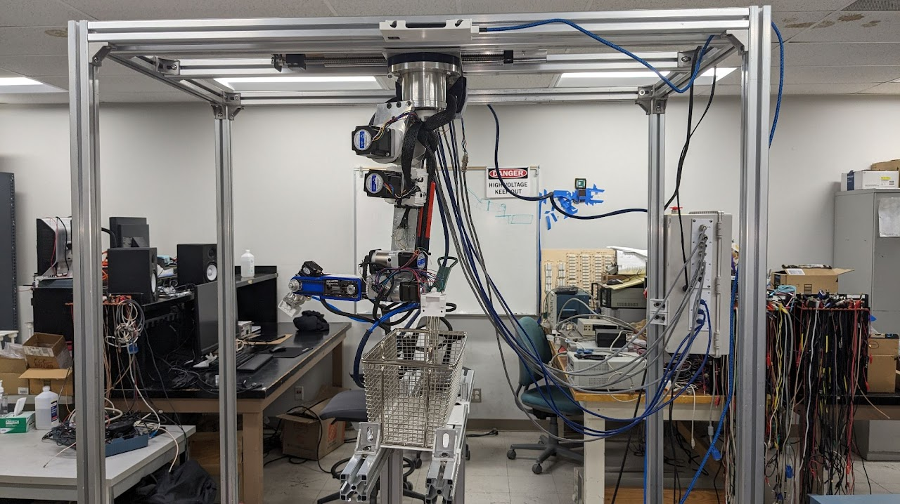

Robotics • Computer Vision • Embedded Systems
Assista Robot
9-Axis Autonomous Kitchen Robot
An autonomous kitchen robot prototype designed to automate fryer operations using embedded control, computer vision, AI-assisted perception, and a customized robotics control interface.

Project Snapshot
Autonomous fryer and grill robot
Embedded software • Computer vision • Robot testing
Fryer basket handling and autonomous kitchen operation
Evaluated by Texas Instruments representatives
Problem → Goal → Solution
Automating repetitive and hazardous fast food tasks.
Fast food kitchens rely on repetitive manual tasks that can be physically demanding, time-sensitive, and potentially hazardous, especially around hot oil and fryer equipment.
The goal of Assista Robotics was to prototype a cost-effective robotic system that could assist with fryer and grill operations while reducing direct worker exposure to dangerous kitchen tasks.
The system uses a 9-axis robotic arm, embedded control hardware, computer vision, and an AI-based perception pipeline to support autonomous interaction with fryer baskets and kitchen objects.
Engineering Highlights
Key technical pieces of the robot system.
Embedded Control
Worked with Teensy 4.1-based control hardware to support robot motion and hardware interaction.
Computer Vision
Developed vision software to help identify objects and support autonomous robot behavior.
AI Perception
Used OpenAI Vision API concepts to support object recognition and task interpretation.
Robot Integration
Tested software and hardware together on a real robot platform for fryer automation.
Development Timeline
From robot platform setup to public showcase demonstration.
Robot Platform Setup
Worked with the 9-axis robot arm platform and studied how the control interface interacted with the hardware.
Embedded Software Development
Developed and tested embedded software behavior using Python, Teensy 4.1, and the robot control interface.
Computer Vision Pipeline
Worked on vision-based perception to help the robot identify objects and support autonomous decision making.
Fryer Basket Testing
Validated robot behavior through physical testing with fryer basket handling and kitchen automation scenarios.
Picnic Day Showcase
Presented the robot at the 2025 UC Davis ECE Picnic Day Showcase, where the project earned 1st place.
Presented at the 2025 UC Davis Picnic Day Showcase — ECE Department
My colleague Elijah Peralta and I earned 1st place in the ECE Picnic Day Project Showcase, evaluated by representatives from Texas Instruments. We demonstrated the robot to students, faculty, industry guests, and alumni.
{kind=link}
{kind=link}
{kind=link}
{kind=link}
Lessons Learned
What this project taught me as an engineer.
This project strengthened my understanding of robotics integration, embedded control, computer vision, and the challenges of testing software on real electromechanical systems.
I gained experience working with a physical robot platform, debugging prototype behavior, and communicating technical ideas to both engineering and non-engineering audiences.